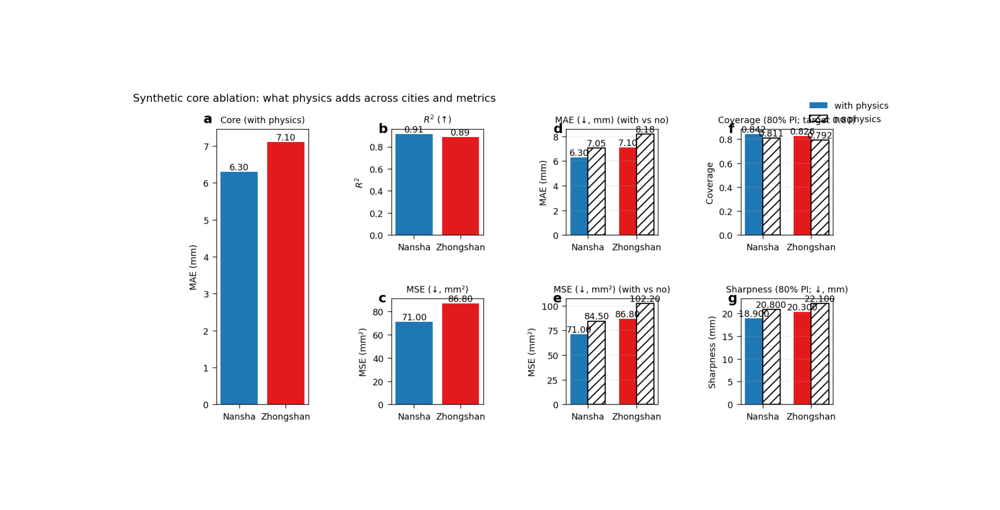

Note
Go to the end to download the full example code.
Core ablation: learning what physics adds to the workflow#
This example teaches you how to read the GeoPrior core-ablation figure.
Many scientific figures answer one of two questions:
How well did the model perform?
What does the inferred field look like?
This figure asks a third question:
What changes when we turn physics on?
That is why the core-ablation page is so useful. It does not only report performance. It compares two model families directly:
with physics
without physics
and it does so across both cities and multiple metrics.
What the figure shows#
The real plotting backend builds a seven-panel layout with labels (a) through (g).
The structure is:
one large left panel for the main core metric under the physics-enabled runs,
two smaller single-variant panels for companion metrics,
four grouped comparison panels showing with-physics vs no-physics side by side.
In the default modern configuration:
the large core panel uses MAE,
the upper companion panel uses R²,
the lower companion panel uses MSE,
the grouped panels compare MAE, MSE, coverage80, and sharpness80.
The script also supports a legacy-style arrangement where the core metric can be switched back to R², and the error panel can use RMSE instead of MSE.
Why this matters#
Ablation figures are important because they answer a stronger scientific question than a single benchmark number.
A single number can tell you that one run is good.
An ablation figure can tell you:
whether the physics module helps consistently,
whether it helps in both cities,
whether better accuracy is accompanied by better uncertainty,
and whether a gain in one metric comes with a loss in another.
This gallery page builds a compact synthetic metrics table and then calls the real plotting backend directly.
Imports#
We use the actual plotting backend from the project code, so this page teaches the real figure generator rather than a separate mockup.
from __future__ import annotations
import tempfile
from pathlib import Path
import matplotlib.image as mpimg
import matplotlib.pyplot as plt
import pandas as pd
from geoprior._scripts.plot_core_ablation import (
plot_fig3_core_ablation,
)
Step 1 - Build a compact metrics table#
The real CLI normally discovers metrics by reading evaluation JSON files from run folders and then assembling a tidy table with fields such as:
city
variant
r2
mae
mse
rmse
coverage80
sharpness80
The plotting function itself only needs that final table, so for a gallery lesson we can construct it directly.
df = pd.DataFrame(
[
{
"city": "Nansha",
"variant": "with-phys",
"r2": 0.914,
"mae": 6.30,
"mse": 71.0,
"rmse": 8.43,
"coverage80": 0.842,
"sharpness80": 18.9,
},
{
"city": "Nansha",
"variant": "no-phys",
"r2": 0.878,
"mae": 7.05,
"mse": 84.5,
"rmse": 9.19,
"coverage80": 0.811,
"sharpness80": 20.8,
},
{
"city": "Zhongshan",
"variant": "with-phys",
"r2": 0.887,
"mae": 7.10,
"mse": 86.8,
"rmse": 9.32,
"coverage80": 0.826,
"sharpness80": 20.3,
},
{
"city": "Zhongshan",
"variant": "no-phys",
"r2": 0.846,
"mae": 8.18,
"mse": 102.2,
"rmse": 10.11,
"coverage80": 0.792,
"sharpness80": 22.1,
},
]
)
print(df.to_string(index=False))
city variant r2 mae mse rmse coverage80 sharpness80
Nansha with-phys 0.914 6.30 71.0 8.43 0.842 18.9
Nansha no-phys 0.878 7.05 84.5 9.19 0.811 20.8
Zhongshan with-phys 0.887 7.10 86.8 9.32 0.826 20.3
Zhongshan no-phys 0.846 8.18 102.2 10.11 0.792 22.1
Step 2 - Read the table before plotting#
This is the most important conceptual step.
The figure is not plotting raw time series, raw maps, or raw tensors. It is plotting a summary table of model results.
Each city appears twice:
once as
with-physonce as
no-phys
That means the figure is fundamentally a comparison of variants.
cities = ["Nansha", "Zhongshan"]
Step 3 - Render the real Fig. 3 layout#
We now call the real plotting backend.
We keep the current default interpretation:
core_metric = “mae”
err_metric = “mse”
which matches the modern default behaviour of the script. The function writes:
PNG
SVG
CSV
and can also write TeX and XLSX if requested.
tmp_dir = Path(
tempfile.mkdtemp(prefix="gp_sg_core_ablation_")
)
plot_fig3_core_ablation(
df,
cities=cities,
core_metric="mae",
err_metric="mse",
out=str(tmp_dir / "core_ablation_gallery"),
out_csv=str(tmp_dir / "core_ablation_gallery.csv"),
out_tex=None,
out_xlsx=None,
dpi=160,
show_legend=True,
show_labels=True,
show_ticklabels=True,
show_title=True,
show_panel_titles=True,
show_values=True,
show_panel_labels=True,
title=(
"Synthetic core ablation: what physics adds across "
"cities and metrics"
),
)
[OK] wrote C:\Users\Daniel\AppData\Local\Temp\gp_sg_core_ablation_5qoritc2\core_ablation_gallery.png/.svg
[OK] wrote C:\Users\Daniel\AppData\Local\Temp\gp_sg_core_ablation_5qoritc2\core_ablation_gallery.csv
Step 4 - Display the saved figure inside the gallery page#
The plotting backend saves the figure to disk and closes it, so we reload the PNG here to make the actual output visible inside Sphinx-Gallery.
img = mpimg.imread(
tmp_dir / "core_ablation_gallery.png"
)
fig, ax = plt.subplots(figsize=(9.4, 4.8))
ax.imshow(img)
ax.axis("off")

(np.float64(-0.5), np.float64(1558.5), np.float64(690.5), np.float64(-0.5))
Step 5 - Quantify the with-physics gains directly#
A good teaching page should not stop at the picture. It should also show the basic comparisons in numbers.
We compute simple “with physics minus no physics” summaries for each city. For MAE, MSE, RMSE, and sharpness80, lower is better, so a negative difference is good. For R² and coverage80, higher is better, so a positive difference is good.
pivot = df.pivot(
index="city",
columns="variant",
values=[
"r2",
"mae",
"mse",
"rmse",
"coverage80",
"sharpness80",
],
)
summary = pd.DataFrame(
{
"delta_r2": (
pivot[("r2", "with-phys")]
- pivot[("r2", "no-phys")]
),
"delta_mae": (
pivot[("mae", "with-phys")]
- pivot[("mae", "no-phys")]
),
"delta_mse": (
pivot[("mse", "with-phys")]
- pivot[("mse", "no-phys")]
),
"delta_rmse": (
pivot[("rmse", "with-phys")]
- pivot[("rmse", "no-phys")]
),
"delta_coverage80": (
pivot[("coverage80", "with-phys")]
- pivot[("coverage80", "no-phys")]
),
"delta_sharpness80": (
pivot[("sharpness80", "with-phys")]
- pivot[("sharpness80", "no-phys")]
),
}
)
print("")
print("With-physics minus no-physics")
print(summary.round(4).to_string())
With-physics minus no-physics
delta_r2 delta_mae delta_mse delta_rmse delta_coverage80 delta_sharpness80
city
Nansha 0.036 -0.75 -13.5 -0.76 0.031 -1.9
Zhongshan 0.041 -1.08 -15.4 -0.79 0.034 -1.8
Step 6 - Learn how to read panel (a)#
Panel (a) is the “core” panel.
In the current default layout, it shows the main core metric for the with-physics runs only. That means it is the first panel a reader should use to understand overall city-level performance under the preferred physics-enabled workflow.
Why start there?
Because panel (a) answers:
“What is the main performance picture when the physics-guided model is used?”
In this lesson, lower MAE is better, so shorter bars are better.
Step 7 - Learn how to read panels (b) and (c)#
These two panels add context to the main core panel.
Panel (b) is the top companion metric. Panel (c) is the error companion metric.
In the modern default layout:
panel (b) shows R²,
panel (c) shows MSE.
Together, these panels help the reader avoid over-interpreting a single metric. A model might improve MAE while only weakly changing R², or improve R² while still keeping large errors in absolute units.
That is exactly why companion panels matter.
Step 8 - Learn how to read panels (d) to (g)#
The four grouped panels are the real ablation heart of the figure.
In each grouped panel:
the filled color bars are with physics
the hatched outline bars are no physics
So the eye can compare the two variants directly.
The grouped panels answer:
Does physics reduce error?
Does physics improve interval coverage?
Does physics make intervals sharper or blurrier?
In this synthetic lesson, the physics-enabled bars are better in both cities across all displayed metrics.
In a real paper figure, the important question is usually not whether every single bar improves perfectly. The more important question is whether the overall pattern is consistent enough to justify the added physical structure.
Step 9 - Why this figure is stronger than a simple leaderboard#
A leaderboard usually compresses the story into one number.
This figure is stronger because it separates:
core performance,
secondary performance,
error magnitude,
and uncertainty behaviour.
That means the reader can see whether a gain in one place is accompanied by a trade-off somewhere else.
For example:
lower MAE but worse coverage would be a mixed result,
better coverage but much worse sharpness would also be mixed,
small but consistent improvements across several panels are often more convincing than one dramatic improvement in only one metric.
Step 10 - Practical takeaway#
This figure is best used when you want to justify the value of the physics-guided model relative to a simpler no-physics baseline.
It is especially useful in a paper because it answers a clear reviewer-style question:
“What do we actually gain from adding physics?”
A strong version of this figure shows:
improvements that are visible in more than one metric,
improvements that occur in more than one city,
and no severe uncertainty trade-off hidden elsewhere.
Command-line version#
The same figure can be produced from the CLI.
The real script normally reads run directories, discovers the evaluation JSON files for each city/variant, collects the metrics table, and then renders the figure. It accepts the four main source paths:
--ns-with--ns-no--zh-with--zh-no
It also accepts:
--core-metricwithmaeorr2--err-metricwithrmseormse--out-csv,--out-tex,--out-xlsx--write-tex--show-values--show-panel-labelsand the shared plotting text options.
Legacy dispatcher:
python -m scripts plot-core-ablation \
--ns-with results/nansha_with_phys \
--ns-no results/nansha_no_phys \
--zh-with results/zhongshan_with_phys \
--zh-no results/zhongshan_no_phys \
--core-metric mae \
--err-metric mse \
--show-values true \
--show-panel-labels true \
--out fig3-core-ablation
RMSE variant:
python -m scripts plot-core-ablation \
--ns-with results/nansha_with_phys \
--ns-no results/nansha_no_phys \
--zh-with results/zhongshan_with_phys \
--zh-no results/zhongshan_no_phys \
--err-metric rmse \
--out fig3-core-ablation
Legacy R²-first layout:
python -m scripts plot-core-ablation \
--ns-with results/nansha_with_phys \
--ns-no results/nansha_no_phys \
--zh-with results/zhongshan_with_phys \
--zh-no results/zhongshan_no_phys \
--core-metric r2 \
--out fig3-core-ablation
Modern CLI:
geoprior plot core-ablation \
--ns-with results/nansha_with_phys \
--ns-no results/nansha_no_phys \
--zh-with results/zhongshan_with_phys \
--zh-no results/zhongshan_no_phys \
--out fig3-core-ablation
The gallery page teaches the figure. The command line reproduces it in a workflow.
Total running time of the script: (0 minutes 2.781 seconds)